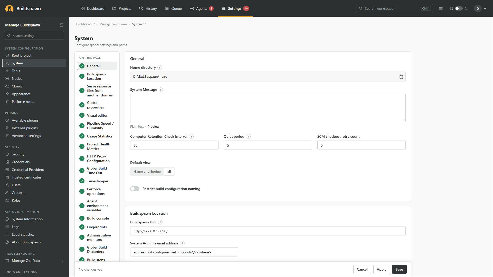
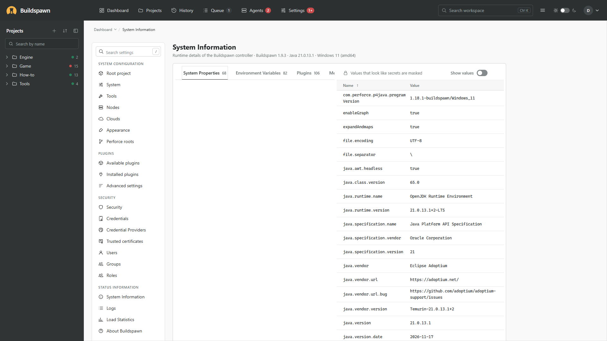
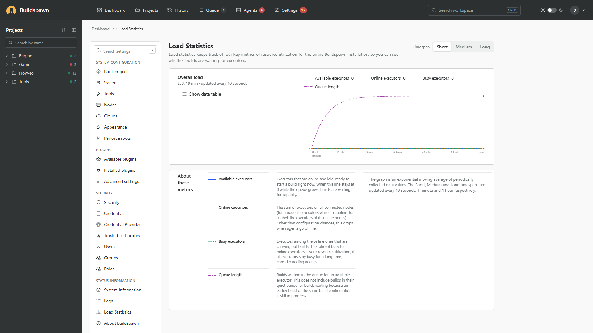

Management pages
One section for each of the smaller pages under Manage: reload, system information, logs, load statistics, the command line client, the script console, nodes, old data, shutdown, the root project, credentials, Perforce roots, the BuildPatch Tool and the plugin pages.
When to use it: when you look after the server and need to find out what a Settings page does, what it shows, and what its buttons change. The big pages have their own guide pages, listed in the Settings overview.
How to open any of them
- Click Manage in the left rail. The Settings page lists every page as a card, or as a row in the list.
- Click the page you want, or use the search box at the top of Settings.
- Use the breadcrumb at the top to go back to Manage.

| Page | Address |
|---|---|
| Reload Configuration from Disk | /reload |
| System Information | /systemInfo |
| Logs | /log |
| Load Statistics | /load-statistics |
| Buildspawn CLI | /cli |
| Script Console | /script |
| Nodes | /computer |
| About Buildspawn | /about |
| Manage Old Data | /administrativeMonitor/OldData/manage |
| Prepare for Shutdown | /prepareShutdown |
| Root project | /rootProject |
| Credentials | /credentials |
| Credential Providers | /configureCredentials |
| Perforce roots | /perforce-roots |
| BuildPatch Tool | /buildpatchtool |
| Plugins pages | /pluginManager/... |
Reload Configuration from Disk
Throws away everything the server holds in memory and loads all settings, build configurations and build records again from the data folder. It does not restart the server.
When to use it
Only after you changed files in the data folder by hand, for example a config.xml of a build configuration. Normal changes through the web pages never need it.
How to use it
- Open Manage › Reload Configuration from Disk.
- A page asks you to confirm. Click Retry using POST (the button is the confirmation).
- Wait. The server shows Starting Buildspawn and your browser reloads when it is ready.
Anything not saved to disk is lost. Running builds keep running, but the page is not available for a short time. Do it when no one is editing settings.
Problems and fixes
- Settings you changed on disk do not show: check the file is valid. A broken file is skipped and an entry appears under Manage Old Data.
System Information
Runtime details of the server, to help you find problems. The header shows the Buildspawn version, the Java version and the operating system.
| Part | What it shows |
|---|---|
| System Properties | The Java system properties, as Name and Value. Values that look like secrets are masked. Click Show values to see the masked ones. Examples: the data folder, the Java home, the file encoding. |
| Environment Variables | The environment of the server process, with secrets masked in the same way. |
| Plugins | Every plugin with Name, Version and Enabled. |
| Memory Usage | A chart of the Java heap: Used and Total. Choose a Timespan of Short, Medium or Long. |
| Thread Dumps | A link to the thread dumps of the server and of each agent. An offline agent shows Offline · not available. |

When you ask for help, copy the version line and the plugin list from this page.
Logs
Log recorders collect log messages from the server code, at the levels you pick. Use them to find out why something in the server fails, for example a version control poll or an agent connection.
How to read the log
- Open Manage › Logs.
- Under Log Recorders, the first row is All Buildspawn Logs: every logger at level info and above. Click View log or Open full log. The newest line is first. Columns are Time, Level, Logger and Message.
How to add a recorder
- Click Add recorder.
- Type a name, for example
Perforce polling, and confirm. - On the recorder's page, add one or more loggers and pick a level for each (for example the logger of the Perforce plugin at FINE).
- Click Save. Then reproduce the problem and open View log.
Each recorder row has Configure, View log and, in More actions, Delete. Log levels shows the levels set now.
Messages are kept in memory. A restart clears them. Very low levels (FINE, FINER, FINEST) make the server slower, so switch them off when you are done.
Problems and fixes
- No logs available: nothing has been written at that level yet. Do the action again.
Load Statistics
Charts of how busy the whole server is. They tell you whether builds wait for free executors and whether you need more agents.
| Metric | Meaning |
|---|---|
| Available executors | Executors that are online and idle, ready to start a build now. If this stays at 0 while the queue grows, builds are waiting for capacity. |
| Online executors | The sum of executors on all connected nodes. It drops when agents go offline. |
| Busy executors | Online executors that run a build. Busy divided by online is your use of capacity. |
| Queue length | Builds waiting for an executor. It does not count builds in their quiet period or builds that wait for an earlier build of the same configuration. |
Choose a Timespan: Short (a point every 10 seconds), Medium (every minute) or Long (every hour). The lines are moving averages. Show data table shows the numbers. The heading Overall load is the whole server. A node or a label has the same chart on its own page.

Buildspawn CLI
The command line client lets you control the server from a shell or a script, for example to start a build from a console or to list build configurations.
- Open Manage › Buildspawn CLI.
- Download the client file with the link at the top of the page. It needs Java.
- Use Filter commands to find a command, and click it to see its usage and an example call.
- Run the example in a shell. Use an API token, not your password. See API tokens.
The table lists Available commands with Name and Description. For day to day work on a console, the terminal program may be easier.
Script Console
Runs a Groovy script inside the server for troubleshooting and for jobs that no page offers.
- Open Manage › Script Console.
- Type a script. Use
printlnto see output. The server's main packages are already imported, and every class of every plugin is visible. - Click Run, or press Ctrl + Enter.
The page starts with a sample script that counts the installed plugins.
A script runs in the server process with no sandbox. It can read every secret, change any setting and run programs as the server's user. Only run a script you understand, and give the Administer permission to very few people.
Problems and fixes
- No output: you used
System.out, which goes to the server's own output. Useprintln. - The page says you are not allowed: you need the Administer permission.
Nodes
The list of the machines that run builds: the built-in node and every agent. You can add, change, connect and monitor them here. The page is described in full in Agents page. Settings of a single agent are in Agent settings.
About Buildspawn
Shows the version, a short description, the licence and the list of third-party libraries and plugin licences that Buildspawn uses. Use it when you need the licence notice of a library for your own records. It has no settings.
Manage Old Data
When you remove or upgrade plugins, or upgrade Buildspawn, old data may stay on disk. Buildspawn converts it when it loads it, but does not save the file again, so you can still go back to an older version. Data that cannot be read at all, such as fields of a plugin that you removed, is skipped so that the server starts and works normally.
- Open Manage › Manage Old Data. The heading shows how many entries there are, for example Old and unreadable data (0). With none, the page says No old data.
- For each entry, read the file name and the Buildspawn version where the format changed. Unreadable fields show on the right.
- Click Discard to save the affected files again without the unreadable fields. Nothing else in the build configuration or node settings changes, and the errors stop showing in the log.
- To convert old data to the current format, pick the version you may need to go back to, and click Upgrade.
After you convert or discard, an older Buildspawn or plugin version may not be able to read the saved file. Make a backup first.
It is fine to leave unreadable data alone. The warning for this page is one of the administrative monitors.
Prepare for Shutdown
Stops the server from starting new builds, so you can restart or switch it off safely once the running builds are done.
- Open Manage › Prepare for Shutdown.
- Optionally type a Reason. Everybody sees it in a banner at the top of every page while the server prepares: Buildspawn is going to shut down. No new builds can be started. The page shows a preview.
- Click Shutdown. Running builds finish. Queued builds wait.
- Restart or stop the server when no build runs. To change the reason, use Update shutdown preparation.
- To go back to normal, click Cancel shutdown (the link is then called Cancel Shutdown in the list).
Triggers keep adding builds to the queue while you prepare, so the queue is long after you cancel.
Do this before a backup or upgrade, so no build is writing files at that moment.
Root project
The root project sits above every project. What you set there is passed down to all projects and build configurations: build steps, parameters, templates, connections, Perforce roots and credentials. The page description reads Connections, parameters and templates that every project inherits.
- Open Manage › Root project. You land on the root project with its sub-tabs.
- Use the tabs and the menu on the left of Build settings. See Global connections and Vault and Templates.
- Click Save.
Credentials
Credentials are the sign-in details builds use: user names and passwords, SSH keys, tokens, certificates and secret files. Secrets are stored encrypted and never shown again.
- Open Manage › Credentials. The page lists the credential stores. The system store holds credentials for the server itself. A store has one or more domains. A domain limits where a credential may be used, for example only for one host name.
- Open a store and a domain, for example Global credentials (unrestricted).
- Click Add Credentials, pick the Kind and fill in the fields. Give it an ID that you can recognise, such as
p4-studio. - Click Create.
How builds use credentials is in Credentials. Credentials can also be set on a single project, and then only that project and the ones below it can use them.
Credential Providers
Decides which sources of credentials are on, and which kinds of credential people may create.
| Field | What it does | Default |
|---|---|---|
| Providers | Pick All, or choose to include or exclude certain providers (for example the system provider, the folder provider or the user provider). | All |
| Types | Pick All, or include or exclude certain kinds, for example allow only Secret text and SSH username with private key. | All |
| Restrictions › Add | Rules that apply to certain providers and types together: Includes or Excludes. | None |
Example: a studio that wants no user passwords on the server excludes the Username with password type, so everybody has to use tokens and keys.
Perforce roots
A Perforce root is a saved connection to a Perforce server with its workspace mapping. Build configurations pick a root instead of repeating the settings.
- Open Manage › Perforce roots.
- Click Create root, name it, pick the credential and set the mapping or stream.
- Click Save. The table shows Used in, the number of build configurations that use each root, with Edit, Duplicate and Delete.
Full details are in Perforce roots and Global connections. Rules for steps that run Perforce commands are on the System page, under Perforce operations.
BuildPatch Tool
Epic gives out the BuildPatch Tool ZIP only after sign-in to its developer portal, so an agent cannot download it alone. Upload it here once, and the Install BuildPatch Tool step sends it to the agents.
Upload a package
- Open Manage › BuildPatch Tool. The Packages card lists what is uploaded: Package, System, Version, SHA-256 and Size. With none it says No package yet.
- Choose the ZIP from the developer portal.
- Pick the System, and type the Version, for example
1.8.8. You must say it, because the tool has no switch that prints its version. - Click Upload.
See the agents
The Agents card lists each agent (the built-in node shows as (built-in)) with System, Version and a State. When an agent has no tool, or an older one, an Install or Update button sends the package over the agent's own connection.
The steps that use it are in Install BuildPatch Tool and Epic Games Store overview.
Problems and fixes
- No Install button for an agent: no package for the agent's system is uploaded. Upload the right one.
- State stays red: the agent is offline. Connect it first.
Plugins pages
The four plugin pages sit under Manage › Plugins. An overview and the advice on updates is in Plugins and updates. Here is each page.
Installed plugins
Lists every plugin: name and version, a short description, health, an Enabled switch and an uninstall button. The heading shows the count, for example 107 plugins installed. Type in the search box to filter. After a change, a bar says Changes will take effect when you restart Buildspawn. A plugin that other plugins need has a locked switch. See Installed plugins.
Available plugins
Plugins from the update site that are not installed yet. Last checked shows when the list was refreshed, and Check now refreshes it. Tick plugins in the table (Name, Released, Health). The bar shows No plugins selected until you do. Then click Install, or Install after restart. See Add a plugin from the update site.
Download progress
Shows each plugin that is being downloaded and installed, with its state. When all rows are done you can start using the plugins right away, or restart if a plugin asks for it. Use Go back to the top page when finished. The page opens by itself after you click Install on Available plugins.
Advanced settings
| Field | What it does | Default | Example |
|---|---|---|---|
| File (Deploy Plugin) | A plugin file from your computer. | None | my-tool.hpi |
| URL (Deploy Plugin) | Or an address to fetch the plugin from. | Empty | https://files.skyforge.example/my-tool.hpi |
| Replace the installed plugin | Plugins come with Buildspawn and are not updated from here. A file for a plugin that is already installed is refused unless you tick this box. | Off | Off |
| Deploy | Installs the plugin. Restart Buildspawn afterwards. | ||
| Update Site › URL | Where the list of available plugins comes from. Reset to default brings back the standard address. Click Submit to save it. | The standard update site | https://updates.skyforge.example/update-center.json |